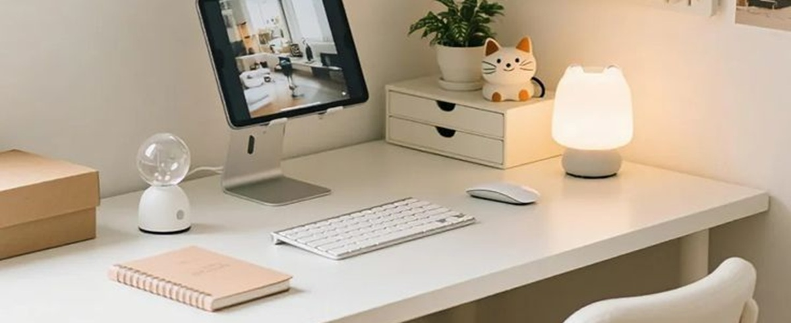

Apprendre avec style, progresser avec plaisir.
❤Cet espace t’invite à explorer des méthodes de révision simples, efficaces et adaptées à ton rythme. Chacune d’elles est expliquée avec clarté pour t’aider à mieux t’organiser, à rester concentré(e) et à apprendre en profondeur. Tu y trouveras des outils comme la méthode Pomodoro, les cartes mentales ou encore la planification visuelle — pensés pour t’accompagner dans une routine de travail plus fluide, apaisée et motivante.

🤍Parce que bien réviser, ce n’est pas seulement une question de technique, l’espace “Conseils” te propose des pistes pour prendre soin de ta motivation, de ton équilibre et de ta confiance en toi. Entre inspirations douces, astuces concrètes et rappels bienveillants, cet espace est là pour te soutenir à chaque étape de ton parcours. Ici, l’organisation rencontre la sérénité.